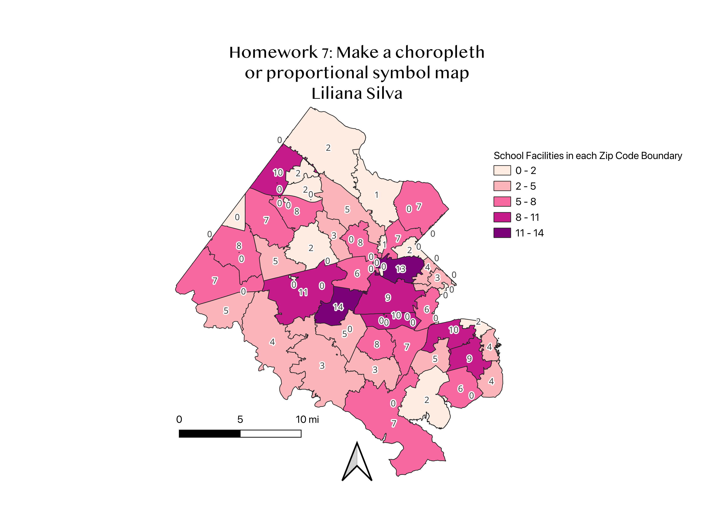

Homework 7: Making a choropleth map with topic of interest
Liliana Silva
I took the data of Fairfax Counties Open GIS Data Zip Code Boundaries and wanted to connect the School facilities with the boundaries inside Fairfax County.
I used the information of each school in each zip code boundary to create a cloropleth of the different amounts in each section. I am very interested in which areas of Fairfax County (my hometown) had more schools. It shows the differences in each area and gives me a basic knowledge of how condensed some are more than others.
The mode I used to categorize for this map was the equal interval with five classes. The equal interval mode for my map divides each section by 3 schools.

Data used for this project
Vector dataset
Link to dataset
CSV dataset